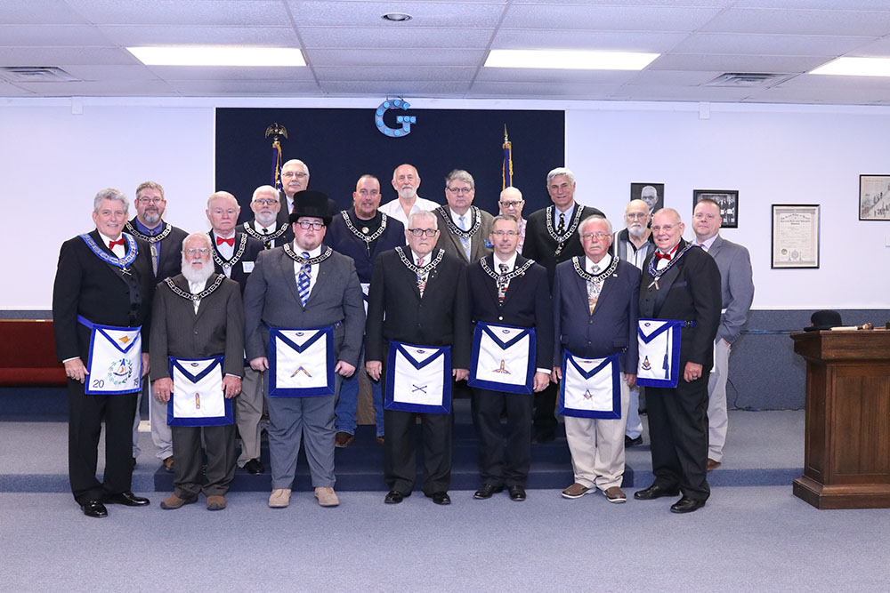

|
General
Masonic Texas Masonic To
Be One, Ask
One!
You must take the first step to become a Mason Local
Community National Community
Duck Creek Masonic Lodge #1419, AF&AM prays for the safety and well being of all of our Service Men and Women at Home and Abroad. |

Worshipful Master: Issac R. Scoggins
2019-2020 October Stated Meeting, October 14, 2019
The October Stated Meeting will start at 7:00pm. Please join us for dinner at 6:30pm.
Duck Creek Masonic Lodge held their 2019-2020 September Stated Meeting on Monday, September 9. It was highlighted by awarding a 'B' Certificate to Jr. Past Master Mike Ripps, and 'A' Certificates to Past Master Ken Chance and Past Master (current DDGM) Joseph W. French, Jr. We also awarded an Endowment to Jr. Past Master Mike Ripps, for his service as Worshipful Master, during the 2018-2019 Masonic Year..
Duck Creek Masonic Lodge is located at 600 N. 5th Street in Garland, TX
Stated Meeting starts at 7:00pm
Supper will start at 6:30pm
Stated Meetings are the second Monday of each Month at 7:00pm
Soft Targets, Crowded Places
Duck Creek Masonic Lodge #1419 will be hosting a special program entitled "Soft Targets, Crowded Places"
This Event will be held on Monday, September 16, 2019, at Duck Creek Masonic Lodge #1419, 600 N. 5th Street, Garland, TX 75040
Please go HERE for a description of this very valuable and relevant program.
A meeting of the Duck Creek Education Foundation was held on Monday, August 12, 2019. At this meeting we discussed changing our bylaws, to require one mandatory meeting a year, and voted to disperse funds to Duck Creek Masonic Lodge for Scholarships and School supplies. The funds dispersal was passed, with the bylaws change voted and approved at a meeting held on Monday, September 9.
The Duck Creek Education Foundation is a 501c(3) and is accepting donations for school supplies and scholarship awards. Scholarships were awarded in April and we continue to collect for the School Supply Drive to support the financially distressed elementary school children within Garland Independent School District. Contact the Lodge at 469-931-2163 for additional information. Click on This Link to donate to the Duck Creek Education Foundation using PayPal.
Duck
Creek Lodge Links
Upcoming Events
Past Masters
Committees
Officers
Directory
Map
to Duck Creek
2014 HubCap Carter Car Show
Photo Gallery
Current
Events
Trestleboard
You must have Adobe Acrobat Reader to read the Duck Creek Lodge Trestleboard.

Click here to download.
2019-2020 Officers

Front-Left to Right: R:W: Joseph W. French, Steve Moore, Junior Warden; Issac Scoggins, Worshipful Master; Mike Ripps, Marshall; Brook Thomas, Senior Warden; Tommy Galbraith, Junior Deacon; Past Master Bill Borne
Back Row-Left to Right: Jason Woods, Chaplain; John T. McDonald, Treasurer, Bo Caperton, Master of Ceremonies, Past Master John Pucket, James Wotzka, Tiler, Past Master Mike Wellman, Nick Oliver, Secretary; Affiliated Past Master Herb Cook; Paul Blumhardt, Senior Deacon; Past Master Ken Chance; Brother Christopher Downs